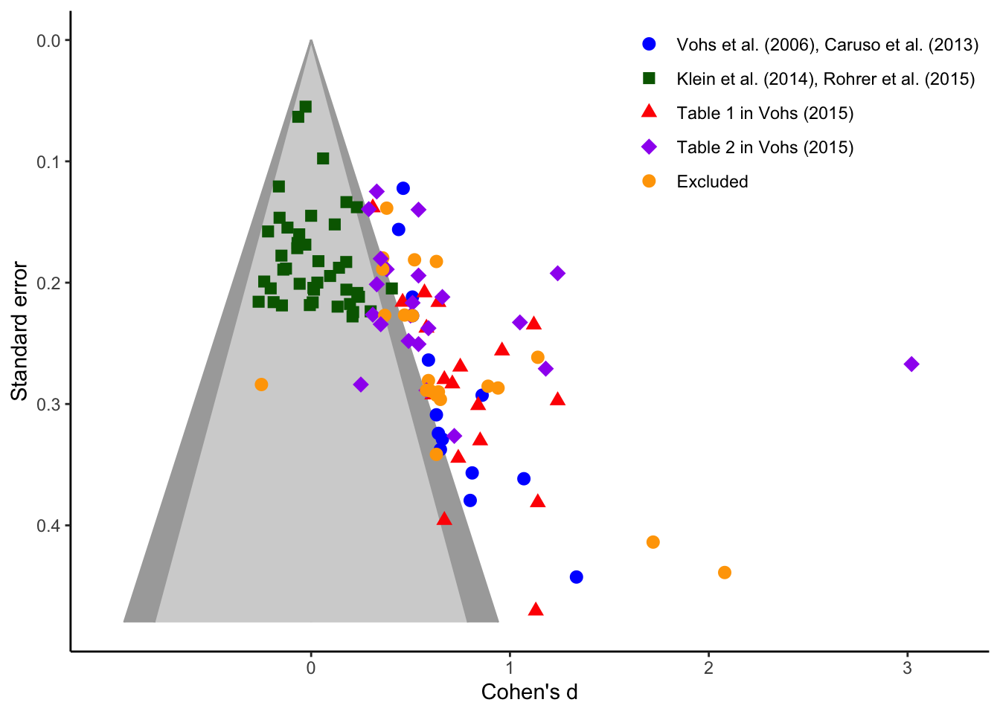
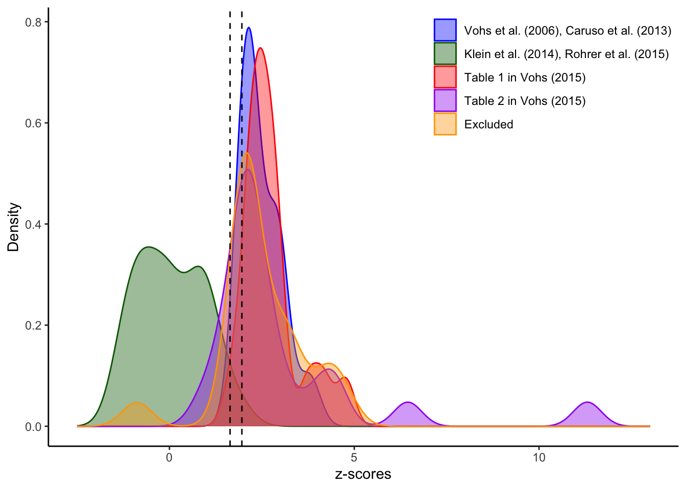
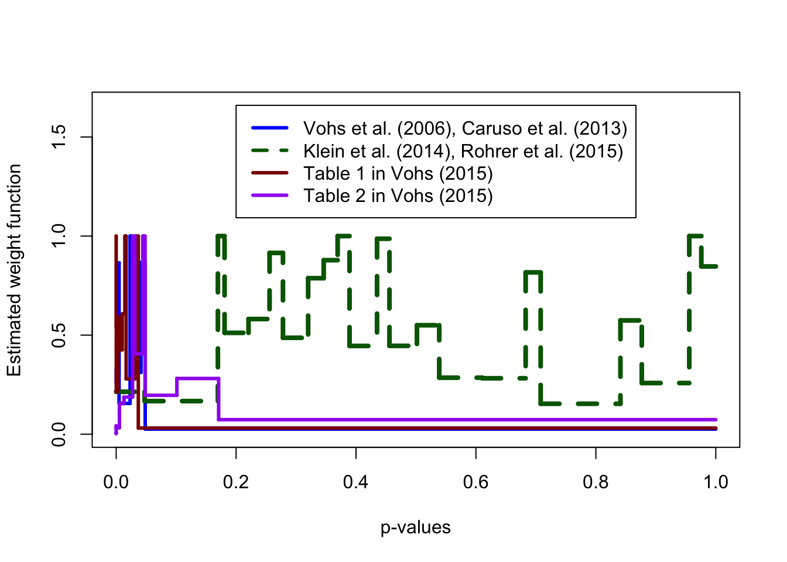

#Data obtained from Vohs, Mead, & Goode (2006)
Vohs_2006 <- tibble(
Dataset = rep("Vohs, Mead, & Goode (2006)"),
Study = as.character(1:9),
N = c(
51,
37,
39,
44,
34,
40,
35,
60,
25
),
N1 = ceiling(N/2),
N2 = floor(N/2),
d = c(
0.86,
0.65,
0.66,
0.63,
0.81,
0.64,
1.07,
0.59,
log(11.25)/(pi/sqrt(3))
)
) %>%
select(!N)2 SCORE Meta-Analysis
Reproduction analyst: Shilaan Alzahawi
SCORE RR ID: 24783
OSF Project: https://osf.io/6mv2x/?view_only=d8c1abcd45eb483d8b8a39dc8b5058ab
I did not deviate from the provided materials. All claims were successfully reproduced at the first attempt. To design the analysis, I consulted the following materials:
- The original paper: Vadillo, Hardwicke, & Shanks. (2016). Selection Bias, Vote Counting, and Money-Priming Effects: A Comment on Rohrer, Pashler, and Harris (2015) and Vohs (2015). Journal of Experimental Psychology: General, 145(5), 655-663. https://doi.org/10.1037/xge0000157
- Data obtained from the original papers included in the meta-analysis
- Data from Klein et al. 2014, obtained at https://osf.io/rn4ue/
- The bushel claims obtained here
- Information on Egger’s regression here
- Information on calculating the SE for Cohen’s d here
- Information on calculating Cohen’s d from F-tests, from Thalmeier & Cook 2002
2.1 Reconstruction of data
The paper relies on four data sets:
- Effect sizes obtained from Vohs et al., 2006 and Caruso et al., 2013
- Effect sizes obtained from Klein et al., 2014 and Rohrer et al., 2015
- Table 1 in Vohs (2015)
- Table 2 in Vohs (2015)
Footnote 1 describes deviations from the reported effect sizes.
2.1.1 Vohs et al., 2006
- Experiment 1: “money prime versus control: t(49) = 2.44, p < 0.02; Cohen’s d = 0.86”
- Experiment 2: “participants in the high-money condition worked significantly longer than participants in the low-money condition before asking for help [t(35) = 2.03, P= 0.05; Cohen’s d = 0.65; M high money = 1058.48 s, SD = 210.12; M low money = 876.63 s, SD = 334.42].”
- Experiment 3: “Participants in the money condition volunteered to help code fewer data sheets than did participants in the control condition [t(37) = 2.06, P < 0.05; Cohen’s d = 0.66]”
- Experiment 4: “Participants who were primed with money were less helpful than participants not primed with money [t(42) = 2.13, P < 0.04; Cohen’s d= 0.63].”
- Experiment 5: “Participants in the high-money condition gathered fewer pencils than did participants in the low-money condition [t(32) = 2.75, P < 0.02; Cohen’s d = 0.81]”
- Experiment 6: “Participants primed with money donated significantly less money to the student fund than participants not primed with money [t(38) = 2.13, P < 0.05; Cohen’s d = 0.64]”
- Experiment 7: “Participants primed with money placed the two chairs farther apart than did participants in the fish condition [t(33) = 2.37, P < 0.05; Cohen’s d = 1.07]”
- Experiment 8: “money versus seascape: t(58) = 2.75, P < 0.05; Cohen’s d = 0.59”
- Experiment 9: “Choosing to perform the task with a co-worker was reduced among money condition participants relative to participants in the fish [\(\chi^2\)(1) = 7.00, P < 0.05; odds ratio = 11.25] condition”. There were three conditions with 37 participants in total; I will assume that the number of participants in the two conditions of interest (money vs. fish) equals \(37 \cdot 2/3 \approx 25\).
For experiment 9, transform odds ratio to Cohen’s d using the following formula:
\[d = \frac{\ln(\text{OR})}{\pi / \sqrt 3}\]
2.1.2 Caruso et al., 2013
- Experiment 1: “participants in the money condition more strongly endorsed system justification than did participants in the control condition, t(28) = 2.12, p = .043, d = 0.80”
- Experiment 2: “participants in the money condition reported stronger just-world beliefs than did participants in the control condition, t(166) = 2.81, p = .006, d = 0.44”
- Experiment 3: “participants in the money condition reported greater SDO than did participants in the control condition, t(78) = 2.24, p = .028, d = 0.51”
- Experiment 4: “Participants in the money prime condition reported significantly higher FMI (M = 0.65, SD = 0.98) than did those in the control condition (M = 0.37, SD = 1.03), F(1, 271) = 14.63, p < .001”
- Experiment 5: “F(1, 88) = 5.84, p = .018”
# Data obtained from Caruso et al., 2013
#Function to get cohen's d for experiments 4 and 5
#Obtained from Thalheimer, 2002
get_d_from_f <- function(f, n1, n2){
sqrt(f*((n1 + n2)/(n1 * n2))*((n1 + n2)/(n1 + n2 - 2)))
}
Caruso_2013 <- tibble(
Dataset = rep("Caruso, Vohs, Baxter, & Waytz (2013)"),
Study = as.character(1:5),
N = c(
30,
168,
80,
275,
92
),
N1 = ceiling(N/2),
N2 = floor(N/2),
d = c(
0.80,
0.44,
0.51,
get_d_from_f(14.63, 138, 137),
get_d_from_f(5.84, 46, 46)
)
) %>%
select(!N)2.1.3 Klein et al., 2014
- 36 sites: Ns for each site in Table 1
- The original effect sizes are not in the paper: disaggregated data (
Klein_2014.xlsx) obtained from https://osf.io/rn4ue/.
Klein_ES <- read_excel(
path = here("data/Klein_2014.xlsx"),
sheet = "Money Priming"
)
#Take out first two rows (Overall and Mean statistics)
Klein_ES <- Klein_ES[3:nrow(Klein_ES),]
#Create clean dataframe for Klein et al. 2014
Klein_2014 <- tibble(
Dataset = rep("Klein et al. (2014)"),
Study = as.character(1:36),
N1 = Klein_ES$`N (Money Priming)`,
N2 = Klein_ES$`N (Control)`,
d = Klein_ES$`ES (from means)`
)2.1.4 Rohrer et al., 2015
- Experiment 1: N = 136, d = -0.07 (Table 1). “Each subject was randomly assigned to either the money condition (n = 69) or the control condition (n = 67).”
- Experiment 2: N = 420, d = 0.06 (Table 1). “Each subject was randomly assigned to either the money condition (n = 211) or the control condition (n = 209)”
- Experiment 3: N = 156, d = -0.06 (Table 1). “Each subject was randomly assigned to either the money condition (n = 78) or the control condition (n = 78).”
- Experiment 4: N = 116, d = 0.14 (Table 1). “Each subject was randomly assigned to either the money condition (n = 50 U.S. and 117 non-U.S.) or the control condition (n = 66 U.S. and 111 non-U.S.). The U.S. residents did not show a money priming effect, t(114) = 0.76, p = .46 (Table 1, Figure 3). The effect size (d) was 0.14”
- Experiment 2B: N = 212, d = 0 (Appendix F)
- Experiment 2C: N = 191, d = 0.23 (Appendix F). “assigned to either the money condition (n = 91) or the control condition (n = 100).”
Rohrer_2015 <- tibble(
Dataset = rep("Rohrer, Pashler, & Harris (2015)"),
Study = c(1:4, "2B", "2C"),
N1 = c(
69,
211,
78,
50,
91,
106
),
N2 = c(
67,
209,
78,
66,
100,
106
),
d = c(
-0.07,
0.06,
-0.06,
0.14,
0,
0.23
)
) 2.1.5 Vohs (2015) Table 1
All data obtained from Vohs (2015) Table 1: p. e88. Relevant information from Vadillo 2016:
- “Several of the effect sizes included in Tables 1 and 2 were not statistically independent (i.e., they referred to different dependent variables collected on the same participants). To avoid giving undue weight to nonindependent effect sizes, we included in our analyses only the first effect size from each study. However, to confirm that this decision did not make an important difference to our conclusions, the excluded effect sizes are shown …”
# Data obtained from Vohs (2015) Table 1
Vohs_2015_T1 <- tibble(
Dataset = rep("Vohs (2015) Table 1"),
Study = c(
"Aarts",
"Boucher Study 1",
"Boucher Study 2",
"Gasiorowska Study 1",
"Gasiorowska Study 1 Exclude",
"Gasiorowska Study 2",
"Mogilner Study 1",
"Mogilner Study 2",
"Mukherjee Study 2",
"Mukherjee Study 1",
"Mukherjee Study 2 Exclude",
"Park Study 3",
"Sarial-Abi Study 1",
"Sarial-Abi Study 1 Exclude",
"Sarial-Abi Study 1 Exclude",
"Sarial-Abi Study 2",
"Sarial-Abi Study 2 Exclude",
"Sarial-Abi Study 3",
"Sarial-Abi Study 3 Exclude",
"Sarial-Abi Study 5",
"Sarial-Abi Study 5 Exclude",
"Sarial-Abi Study 5 Exclude",
"Teng Study 2",
"Teng Study 3",
"Teng Study 3 Exclude",
"Zhou Study 3",
"Zhou Study 4"
),
N = c(
40,
27,
21,
68,
68,
90,
212,
59,
88,
54,
36,
74,
54,
54,
54,
49,
49,
48,
48,
32,
32,
32,
36,
53,
53,
84,
96
),
N1 = ceiling(N/2),
N2 = floor(N/2),
d = c(
0.85,
0.67,
1.13,
0.96,
1.14,
0.64,
0.31,
0.75,
0.46,
0.67,
0.63,
0.58,
1.24,
0.89,
0.94,
0.61,
0.63,
0.84,
0.65,
1.14,
1.72,
2.08,
0.74,
0.71,
0.59,
1.12,
0.57
)
) %>%
select(!N)2.1.6 Vohs (2015) Table 2
- Relevant information from Vadillo 2016: “During the review of the present article, an anonymous reviewer revealed that the data reported by Chatterjee, Rose, and Sinha (2013) are under investigation because several lines of evidence suggest that they are tainted (Pashler, Rohrer, Abramson, Wolfson, & Harris, 2016). Consequently, in our analysis we omitted two data points from this article that were originally included in Vohs’s tables.” This reproduction will also exclude the data points from Chatterjee et al. 2013.
- Similar to Table 1, only the first effect size of each Study will be included.
- NB: I recoded the sign of the effect sizes in Table 2, such that positive effects are in the expected direction (in line with all other obtained data)
#Data obtained from Vohs (2015) Table 2
Vohs_2015_T2 <- tibble(
Dataset = rep("Vohs (2015) Table 2"),
Study = c(
#Exclude the first two datapoints from Chatterjee
"Gasiorowska Study 1",
"Gasiorowska Study 1 Exclude",
"Gasiorowska Study 1 Exclude",
"Gasiorowska Study 2",
"Gasiorowska Study 3a",
"Gasiorowska Study 3b",
"Gasiorowska Study 4",
"Gueguen Study 1",
"Gueguen Study 2",
"Kushlev Study 2",
"Kuzminska Study 3",
"Mogilner Study 1a",
"Mogilner Study 1a Exclude",
"Mogilner Study 2",
"Molinsky Study 1",
"Molinsky Study 1 Exclude",
"Molinsky Study 1 Exclude",
"Molinsky Study 1 Exclude",
"Molinsky Study 1 Exclude",
"Molinsky Study 2",
"Molinsky Study 2 Exclude",
"Molinsky Study 2 Exclude",
"Park Study 1",
"Park Study 1 Exclude",
"Park Study 2",
"Park Study 3",
"Pfeffer Study 2",
"Piers Study 1",
"Roberts Study 1",
"Roberts Study 1 Exclude",
"Teng Study 4",
"Xie Study 1",
"Xie Study 2",
"Xie Study 2 Exclude"
),
N = c(
67,
126,
126,
120,
129,
64,
84,
100,
50,
66,
74,
212,
212,
88,
rep(50, 5),
rep(80, 3),
rep(79, 2),
40,
74,
260,
208,
114,
114,
110,
94,
125,
126
),
N1 = ceiling(N/2),
N2 = floor(N/2),
d = c(
0.49,
0.36,
0.63,
3.02,
1.24,
1.18,
1.05,
0.33,
0.25,
0.54,
0.59,
0.54,
0.38,
0.51,
0.58,
0.58,
-0.25,
0.64,
0.60,
0.50,
0.47,
0.51,
0.31,
0.37,
0.72,
0.35,
0.33,
0.29,
0.38,
0.36,
0.54,
0.66,
0.35,
0.52
)
) %>%
select(!N)2.2 Create final dataset
df <- bind_rows(
Vohs_2006,
Caruso_2013,
Klein_2014,
Rohrer_2015,
Vohs_2015_T1,
Vohs_2015_T2
) %>%
mutate(
Exclude = grepl("Exclude", Study),
#Calculate SE
SE = sqrt((N1 + N2)/(N1*N2) + d^2/(2*(N1+N2))),
#Calculate x and y for Egger's regression test
#We predict the z score from 1/SE
z = d/SE, #z score
x = 1/SE,
#Separate the data into 5 groups as in Figure 1
group = factor(case_when(
Exclude ~ "Excluded",
Dataset %in% c(
"Vohs, Mead, & Goode (2006)", "Caruso, Vohs, Baxter, & Waytz (2013)"
) ~ "Vohs et al. (2006), Caruso et al. (2013)",
Dataset == "Vohs (2015) Table 1" ~ "Table 1 in Vohs (2015)",
Dataset == "Vohs (2015) Table 2" ~ "Table 2 in Vohs (2015)",
TRUE ~ "Klein et al. (2014), Rohrer et al. (2015)"
),
levels = c(
"Vohs et al. (2006), Caruso et al. (2013)",
"Klein et al. (2014), Rohrer et al. (2015)",
"Table 1 in Vohs (2015)",
"Table 2 in Vohs (2015)",
"Excluded"
)
))2.3 Claim evaluations
Coded claim text (original paper): The first set of effect sizes, represented by the darker circles (blue in the online version of the article), refers to the results of the seminal article on money priming (Vohs et al., 2006) and the original results of the study (Caruso et al., 2013) that Rohrer et al. (2015) attempted to replicate. As noted by Rohrer et al., visual inspection suggests that the effect sizes in this data set are strongly correlated with their standard errors. Egger’s regression test for funnel plot asymmetry (Egger et al., 1997) confirms that this relation is statistically significant, t(12) = 5.42, p < .001.
Reproduction data source(s):
https://osf.io/6mv2x/?view_only=d8c1abcd45eb483d8b8a39dc8b5058ab
Description of reproduction data:
Original data obtained from original papers, accessed on March 4, 2022, accessible in the OSF project linked above: Vohs, Mead, & Goode (2006); Caruso, Vohs, Baxter, & Waytz (2013); Klein et al. (2014) with data posted at https://osf.io/rn4ue/; Rohrer, Pashler, & Harris (2015); Vohs (2015) Table 1 & Table 2. For Klein et al. (2014), disaggregated data was not included in the paper and was instead obtained from an OSF repository, accessed on March 5, 2022.
Primary reproduction criteria
| Criterion | Original value | Precise reproduction | Approximate reproduction | Non-reproduction |
|---|---|---|---|---|
| Test statistic | t = 5.42 | t = 5.42 | 4.61 \(\le\) t \(\le\) 6.23 | t < 4.61 or t > 6.23 |
| p-value | p < .001 | p < .001 | .001 \(\le\) p \(\le\) .051 | p > .051 |
NB: The sample size and focal coefficient are considered “approximately reproduced” when the reproduction result is within 15% of the original result. For p-values, the result is considered “approximately reproduced” when it is within 0.05 points of the original.
Analyst success criteria: The claim will be considered reproducible if Egger’s regression test for funnel plot asymmetry meets the approximate reproduction criteria for the test statistic (4.61 \(\le\) t \(\le\) 6.23) and the precise reproduction criteria for the p-value (p < .001).
Reproduction results
#Extract results of Vohs et al., 2006 and Caruso et al., 2013
df_group1 <- df %>%
filter(group == "Vohs et al. (2006), Caruso et al. (2013)")
#Run Egger's regression test
tidy(lm(z ~ x, data = df_group1))[1, ]#we are interested in the intercept# A tibble: 1 × 5
term estimate std.error statistic p.value
<chr> <dbl> <dbl> <dbl> <dbl>
1 (Intercept) 1.72 0.316 5.44 0.000150Reproduction outcome: Based on the reproduction criteria, the claim did reproduce.
Coded claim text (original paper): The two remaining data sets in Figure 1 refer to the effect sizes included in Vohs’s (2015) Tables 1 and 2. Regression tests confirmed that the remaining effect sizes were also related to their standard errors for the studies included in Table 2 (diamonds, which are purple in the online article), t(21) = 1.89, p = .072.
Reproduction data source(s):
https://osf.io/6mv2x/?view_only=d8c1abcd45eb483d8b8a39dc8b5058ab
Description of reproduction data:
Original data obtained from original papers, accessed on March 4, 2022, accessible in the OSF project linked above: Vohs, Mead, & Goode (2006); Caruso, Vohs, Baxter, & Waytz (2013); Klein et al. (2014) with data posted at https://osf.io/rn4ue/; Rohrer, Pashler, & Harris (2015); Vohs (2015) Table 1 & Table 2. For Klein et al. (2014), disaggregated data was not included in the paper and was instead obtained from an OSF repository, accessed on March 5, 2022.
Primary reproduction criteria
| Criterion | Original value | Precise reproduction | Approximate reproduction | Non-reproduction |
|---|---|---|---|---|
| Test statistic | t = 1.89 | t = 1.89 | 1.61 \(\le\) t \(\le\) 2.17 | t < 1.61 or t > 2.17 |
| p-value | p = .072 | p = .072 | .022 \(\le\) p \(\le\) .122 | p < .022 or p > .122 |
NB: The sample size and focal coefficient are considered “approximately reproduced” when the reproduction result is within 15% of the original result. For p-values, the result is considered “approximately reproduced” when it is within 0.05 points of the original.
Analyst success criteria: The claim will be considered reproducible if Egger’s regression test for funnel plot asymmetry meets the approximate reproduction criteria for the test statistic (1.61 \(\le\) t \(\le\) 2.17), and the p-value (.022 \(\le\) p \(\le\) .122).
Reproduction results
#Extract results of Vohs (2015) Table 2
df_group2 <- df %>%
filter(Dataset == "Vohs (2015) Table 2" & !Exclude)
#Run Egger's regression test
tidy(lm(z ~ x, data = df_group2))[1, ]#we are again interested in the intercept# A tibble: 1 × 5
term estimate std.error statistic p.value
<chr> <dbl> <dbl> <dbl> <dbl>
1 (Intercept) 3.49 1.94 1.80 0.0871Reproduction outcome: Based on the reproduction criteria, the claim did reproduce.
Coded claim text (original paper): Beyond the quantitative results of Egger’s regressions, perhaps the most remarkable feature of Figure 1 is that many of the effect sizes that reached statistical significance are packed together immediately adjacent to the gray contour representing statistical significance. Funnel plot asymmetry is not a perfect indicator of selection and reporting biases (Ioannidis, 2005; Sterne et al., 2011), but the close alignment of effect sizes with the border of significance makes it difficult to believe that this distribution of effect sizes is unbiased.
Reproduction data source(s):
https://osf.io/6mv2x/?view_only=d8c1abcd45eb483d8b8a39dc8b5058ab
Description of reproduction data:
Original data obtained from original papers, accessed on March 4, 2022, accessible in the OSF project linked above: Vohs, Mead, & Goode (2006); Caruso, Vohs, Baxter, & Waytz (2013); Klein et al. (2014) with data posted at https://osf.io/rn4ue/; Rohrer, Pashler, & Harris (2015); Vohs (2015) Table 1 & Table 2. For Klein et al. (2014), disaggregated data was not included in the paper and was instead obtained from an OSF repository, accessed on March 5, 2022.
Primary reproduction criteria
| Criterion | Original value | Precise reproduction | Approximate reproduction | Non-reproduction |
|---|---|---|---|---|
| Sample size | n = 99 effect sizes | n = 99 | 84 \(\le\) n \(\le\) 114 | n < 84 or n > 114 |
NB: The sample size and focal coefficient are considered “approximately reproduced” when the reproduction result is within 15% of the original result. For p-values, the result is considered “approximately reproduced” when it is within 0.05 points of the original.
Analyst success criteria: The claim will be considered reproducible if a reproduction of Figure 1 will (1) meet the approximate reproduction criteria for sample size (85 \(\le\) n \(\le\) 144) and (2) lead to the same qualitative conclusion: a close alignment of effect sizes with the border of significance (i.e., statistically significant effects are packed together immediately adjacent to the grey contour representing statistical significance).
Reproduction results
#calculate contours for the funnel plot
SEs <- seq(0.48, 0, length.out = nrow(df))
lower_bounds_alpha1 <- -qnorm(.05/2, lower.tail = F)*SEs
upper_bounds_alpha1 <- -lower_bounds_alpha1
lower_bounds_alpha2 <- -qnorm(.10/2, lower.tail = F)*SEs
upper_bounds_alpha2 <- -lower_bounds_alpha2
#create contour-enhanced funnel plot
funnel_gww8qr <- ggplot() +
#fill area for insignificant negative effects with p > .10
geom_ribbon(
mapping = aes(xmin = 0, xmax = lower_bounds_alpha2, y = SEs),
fill = "lightgray", color = "lightgray",
) +
scale_y_reverse(
limits = c(0.48, 0),
breaks = seq(0.4, 0, -0.1)
) +
#fill area for insignificant positive effects with p > .10
geom_ribbon(
mapping = aes(xmin = 0, xmax = upper_bounds_alpha2, y = SEs),
fill = "lightgray", color = "lightgray",
) +
#fill area for marginally significant negative effects with .05 < p < .10
geom_ribbon(
mapping = aes(xmin = lower_bounds_alpha2, xmax = lower_bounds_alpha1, y = SEs),
fill = "darkgray", color = "darkgray",
) +
#fill area for marginally significant positive effects with .05 < p < .10
geom_ribbon(
mapping = aes(xmin = upper_bounds_alpha2, xmax = upper_bounds_alpha1, y = SEs),
fill = "darkgray", color = "darkgray",
) +
geom_point(
mapping = aes(
x = d, y = SE, color = group, shape = group, size = group
),
data = df
) +
theme_classic() +
scale_size_manual(
values = c(rep(2.5, 3), 3.5, 2.5)
) +
scale_colour_manual(
values = c("blue", "darkgreen", "red", "purple", "orange")
) +
scale_shape_manual(
values = c("circle", "square", "triangle", "diamond", "circle")
) +
labs(x = "Cohen's d", y = "Standard error") +
scale_x_continuous(
breaks = 0:3,
labels = 0:3,
limits = c(-1, 3.2)
) +
theme(
legend.title=element_blank(),
legend.position = c(0.8,0.85)
)
funnel_gww8qr
#Check sample size
nrow(df %>% filter(group != "Excluded")) [1] 96Reproduction outcome: Based on the reproduction criteria, the claim did reproduce.
Coded claim text (original paper): Figure 2 represents the density function of z scores within these data sets. As can be seen, the modal z scores are just large enough to be statistically significant in a two-tailed test. This is also the case for the experiments reported by Vohs et al. (2006) and Caruso et al. (2013). [Figure 2, Vohs et al. (2006), Caruso et al. (2013)]
Reproduction data source(s):
https://osf.io/6mv2x/?view_only=d8c1abcd45eb483d8b8a39dc8b5058ab
Description of reproduction data:
Original data obtained from original papers, accessed on March 4, 2022, accessible in the OSF project linked above: Vohs, Mead, & Goode (2006); Caruso, Vohs, Baxter, & Waytz (2013); Klein et al. (2014) with data posted at https://osf.io/rn4ue/; Rohrer, Pashler, & Harris (2015); Vohs (2015) Table 1 & Table 2. For Klein et al. (2014), disaggregated data was not included in the paper and was instead obtained from an OSF repository, accessed on March 5, 2022.
Primary reproduction criteria
| Criterion | Original value | Precise reproduction | Approximate reproduction | Non-reproduction |
|---|---|---|---|---|
| Sample size | n = 116 effect sizes | n = 116 | 99 \(\le\) n \(\le\) 133 | n < 99 or n > 133 |
NB: The sample size and focal coefficient are considered “approximately reproduced” when the reproduction result is within 15% of the original result. For p-values, the result is considered “approximately reproduced” when it is within 0.05 points of the original.
Analyst success criteria: The claim will be considered reproducible if a reproduction of Figure 2 will (1) meet the approximate reproduction criterion for sample size (99 \(\le\) n \(\le\) 134) and (2) lead to the same qualitative conclusion: the density function of the z scores for Vohs et al. (2006) and Caruso et al. (2013) peaks only slightly to the right of the vertical line that represents statistical significance (z = 1.96).
Reproduction results
#Plot the density of the z scores
density_gjvjlo <- ggplot(
data = df,
mapping = aes(x = z, color = group, fill = group)
) +
geom_density(alpha = 0.4) +
theme_classic() +
theme(
legend.title = element_blank(),
legend.position = c(0.8,0.85)
) +
labs(x = "z-scores", y = "Density") +
scale_colour_manual(
values = c("blue", "darkgreen", "red", "purple", "orange")
) +
scale_fill_manual(
values = c("blue", "darkgreen", "red", "purple", "orange")
) +
scale_x_continuous(
limits = c(-2.5, 13)
) +
geom_vline(xintercept = 1.64, linetype = "dashed") +
geom_vline(xintercept = 1.96, linetype = "dashed")
density_gjvjlo
#Check sample size
nrow(df) [1] 117Reproduction outcome: Based on the reproduction criteria, the claim did reproduce.
Coded claim text (original paper): In Figure 3 we show the best fitting weight functions of two selection models (Dear & Begg, 1992) applied to the same four data sets that are included in Figure 1. As can be seen, both models suggest that p values play a crucial role in the distribution of effect sizes reported in Vohs et al. (2006) and Caruso et al. (2013), and in Tables 1 and 2 from Vohs (2015), but much less so in the Rohrer et al. (2015) and Klein et al. (2014) data. The best models of the former data sets are ones in which studies yielding p values greater than .1 are virtually guaranteed to be excluded…selection models yield nonflat weight functions when the proportion of nonsignificant results is implausibly low given the observed distribution of effect sizes and sample sizes. Thus, the weight functions depicted in Figure 3 show that a distribution of results like the one presented by Vohs is unlikely to have arisen in the absence of selection bias. [Figure 3, Dear & Begg, 1992]
Reproduction data source(s):
https://osf.io/6mv2x/?view_only=d8c1abcd45eb483d8b8a39dc8b5058ab
Description of reproduction data:
Original data obtained from original papers, accessed on March 4, 2022, accessible in the OSF project linked above: Vohs, Mead, & Goode (2006); Caruso, Vohs, Baxter, & Waytz (2013); Klein et al. (2014) with data posted at https://osf.io/rn4ue/; Rohrer, Pashler, & Harris (2015); Vohs (2015) Table 1 & Table 2. For Klein et al. (2014), disaggregated data was not included in the paper and was instead obtained from an OSF repository, accessed on March 5, 2022.
Primary reproduction criteria
| Criterion | Original value | Precise reproduction | Approximate reproduction | Non-reproduction |
|---|---|---|---|---|
| Sample size | n = 99 effect sizes | n = 99 | 84 \(\le\) n \(\le\) 114 | n < 84 or n > 114 |
NB: The sample size and focal coefficient are considered “approximately reproduced” when the reproduction result is within 15% of the original result. For p-values, the result is considered “approximately reproduced” when it is within 0.05 points of the original.
Analyst success criteria: The claim will be considered reproducible if a reproduction of Figure 3 (top panel: Dear & Begg selection model) will (1) meet the approximate reproduction criterion for sample size (85 < n < 114, inclusive of endpoints) and (2) lead to the same qualitative conclusion: nonflat weight functions for the distribution of effect sizes reported in Vohs et al. (2006) and Caruso et al. (2013) and in Tables 1 and 2 from Vohs (2015), with the weights being highest for lower p-values (in particular, p < .10), while the weight functions for Rohrer et al. (2015) and Klein et al. (2014) will be much less flat and will display less “bunching” at lower p-values.
Reproduction results
#Fit Dear & Begg weight function
weights <- df %>%
split(.$group) %>%
map(~ DearBegg(y = .$d, u = .$SE, trace = FALSE))
Vohs <- weights$`Vohs et al. (2006), Caruso et al. (2013)`
Klein <- weights$`Klein et al. (2014), Rohrer et al. (2015)`
Table1 <- weights$`Table 1 in Vohs (2015)`
Table2 <- weights$`Table 2 in Vohs (2015)`#Plot the best fitting weight function using the Dear & Begg selection model
plot(0, 0, type = "n", xlim = c(0, 1), ylim = c(0, 1.66), xlab = "p-values",
ylab = "Estimated weight function")
weightLine(Vohs$p, w = Vohs$w, col0 = "blue", lwd0 = 3)
weightLine(Klein$p, w = Klein$w, col0 = "darkgreen", lwd0 = 4, lty0=2)
weightLine(Table1$p, w = Table1$w, col0 = "darkred", lwd0 = 3)
weightLine(Table2$p, w = Table2$w, col0 = "purple", lwd0 = 3)
legend(0.2, 1.66, legend = c(
"Vohs et al. (2006), Caruso et al. (2013)",
"Klein et al. (2014), Rohrer et al. (2015)",
"Table 1 in Vohs (2015)",
"Table 2 in Vohs (2015)"
),
col = c("blue", "darkgreen", "darkred", "purple"),
lty = c(1, 2, 1, 1),
lwd = 3
)
Reproduction outcome: Based on the reproduction criteria, the claim did reproduce.
Coded claim text (original paper): The first row in our Table 1 shows the proportion of significant results reported in the four sets of studies. Indeed, their average power to detect an effect of the size estimated with a fixed-effect meta-analysis is only .55. The proportion of significant results (.86) is thus larger than the power estimates. [Table 1, Set of studies: Vohs et al. (2006); Caruso et al. (2013), Proportion of significant results = .86, Mean power to detect FE estimate = .55, p = .017, one-tailed, p <.05]
Reproduction data source(s):
https://osf.io/6mv2x/?view_only=d8c1abcd45eb483d8b8a39dc8b5058ab
Description of reproduction data:
Original data obtained from original papers, accessed on March 4, 2022, accessible in the OSF project linked above: Vohs, Mead, & Goode (2006); Caruso, Vohs, Baxter, & Waytz (2013); Klein et al. (2014) with data posted at https://osf.io/rn4ue/; Rohrer, Pashler, & Harris (2015); Vohs (2015) Table 1 & Table 2. For Klein et al. (2014), disaggregated data was not included in the paper and was instead obtained from an OSF repository, accessed on March 5, 2022.
Reproduction criteria
| Criterion | Original value | Precise reproduction | Approximate reproduction | Non-reproduction |
|---|---|---|---|---|
| p-value | p = .017 | p = .017 | p \(\le\) .067 | p > .067 |
| Proportion of significant results | Prop = .86 | Prop = .86 | .73 \(\le\) Prop \(\le\) .99 | Prop < .73 or Prop > .99 |
| Mean power to detect FE estimate | Mean = .55 | Mean = .55 | .47 \(\le\) Mean \(\le\) .63 | Mean < .47 or Mean > .63 |
NB: The sample size and focal coefficient are considered “approximately reproduced” when the reproduction result is within 15% of the original result. For p-values, the result is considered “approximately reproduced” when it is within 0.05 points of the original.
Analyst success criteria: The claim will be considered reproducible if a one-tailed binomial test contrasting the observed proportion of significant results with the probability of success given the estimate of power meets the approximate reproduction criteria outlined above for the p-value, proportion of significant results, and the mean power to detect the fixed effects estimate.
Reproduction results
#Calculate proportion of significant results
round(mean(Vohs$p < 0.05), 2)[1] 0.93#Calculate meta-analytic effect size estimate
d_meta <- rma(yi = df_group1$d, sei = df_group1$SE, method = "FE")$b
#For each study, calculate power to detect meta-analytic effect size estimate
df_group1 <- df_group1 %>%
rowwise() %>%
mutate(
power = pwr.t2n.test(
n1 = N1, n2 = N2, d = d_meta, alternative = "two.sided")$power
)
#Calculate average power across all studies
round(mean(df_group1$power), 2)[1] 0.55#Calculate p value of one-tailed binomial test contrasting the observed
#proportion of significant results with the probability of success given power
binom.test(
x = sum(Vohs$p < .05), #number of successes
n = nrow(df_group1), #number of trials
p = mean(df_group1$power), #probability of success, based on power
alternative = "greater" #one-tailed test
)$p.value[1] 0.002979181Reproduction outcome: Based on the reproduction criteria, the claim did reproduce.
2.4 Description of materials provided
All materials on the OSF project may be shared publicly. Overview and description of the materials:
Vadillo_JournExPsychGen_2016_BrGp_bushel_claims.md
An overview of all claims extracted from the paperVadillo_JournExPsychGen_2016_BrGp_24783_SDR_Pregistration.xlsx
Excel workbook with the preregistered reproduction criteria for all claims part of the reproduction attempt- Original papers from which data were obtained. All papers (except Vohs, 2015) are openly available online and added to the repository:
Caruso 2013.pdfopenly available at https://carlsonschool.umn.edu/sites/carlsonschool.umn.edu/files/2019-04/caruso_vohs_et_al_2013_jepg_0.pdfKlein et al (2014).pdfopenly available at https://econtent.hogrefe.com/doi/10.1027/1864-9335/a000178Rohrer 2015.pdfopenly available at http://uweb.cas.usf.edu/~drohrer/pdfs/Rohrer_et_al_2015JEPG.pdfVohs 2006.pdfopenly available at https://web.missouri.edu/~segerti/capstone/VohsMoney.pdf
Klein_2014.xlsx- Data for Klein et al. 2014, obtained from https://osf.io/rn4ue/
Vadillo_2016.csv
Reconstructed datasetAnalysis-script.Rmd
Preregistered analysis script (on randomly shuffled, blinded data)Analysis-script.html
Knitted output of the preregistered analysis script (on randomly shuffled, blinded data)Transparency Trail.Rmd
Transparency trail of the reproduction attempt. This includes the analysis pipeline and full results/output of the analysis script (applied to the unblinded data)Transparency-Trail.html
Knitted output of the transparency trail of the reproduction attempt. This includes the analysis pipeline and full results/output of the analysis script (applied to the unblinded data)
2.5 References
Caruso, Vohs, Baxter, & Waytz. (2013). Mere Exposure to Money Increases Endorsement of Free-Market Systems and Social Inequality. Journal of Experimental Psychology: General, 142(2), 301-306. https://doi.org/10.1037/a0029288
Klein et al. (2014). Investigating Variation in Replicability: A “Many Labs” Replication Projects. Social Psychology, 45(3), 142-152. https://doi.org/10.1027/1864-9335/a000178
Rohrer, D., Pashler, H., & Harris, C.R. (2015). Do Subtle Reminders of Money Change People’s Political Views? Journal of Experimental Psychology: General, 144(4), e73-e85. http://dx.doi.org/10.1037/xge0000058
Thalheimer, W., & Cook, S. (2002, August). How to calculate effect sizes from published research articles: A simplified methodology. Retrieved March 4, 2022 from https://www.bwgriffin.com/gsu/courses/edur9131/content/Effect_Sizes_pdf5.pdf
Vadillo, Hardwicke, & Shanks. (2016). Selection Bias, Vote Counting, and Money-Priming Effects: A Comment on Rohrer, Pashler, and Harris (2015) and Vohs (2015). Journal of Experimental Psychology: General, 145(5), 655-663. https://doi.org/10.1037/xge0000157
Vohs, Mead, & Goode. (2006). The Psychological Consequences of Money. Science, 314(5802), 1154-1156. https://psycnet.apa.org/doi/10.1126/science.1132491
Vohs. (2015). Money Priming Can Change People’s Thoughts, Feelings, Motivations, and Behaviors: An Update on 10 Years of Experiments. Journal of Experimental Psychology: General, 144(4), e86-e93. http://dx.doi.org/10.1037/xge0000091